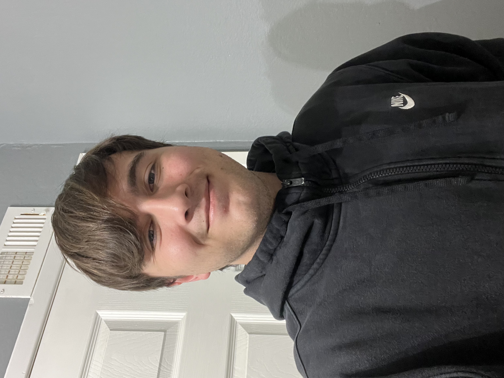

Cashier
- Company: Six Flags Magic Mountain
- Location: Valencia, CA
- Dates: June 2022 - August 2022
- Responsibilities: Provided excellent customer service, handled cash transactions, and maintained a clean and organized work environment.

Computer Information Technology junior with hands-on experience deploying cloud infrastructure on AWS, administering Linux and Windows Server environments, and automating system monitoring with PowerShell and Bash. Additionally, I have five years of customer service experience and a strong background in troubleshooting and problem-solving.
Network Engineering, IoT Security, Cloud Computing